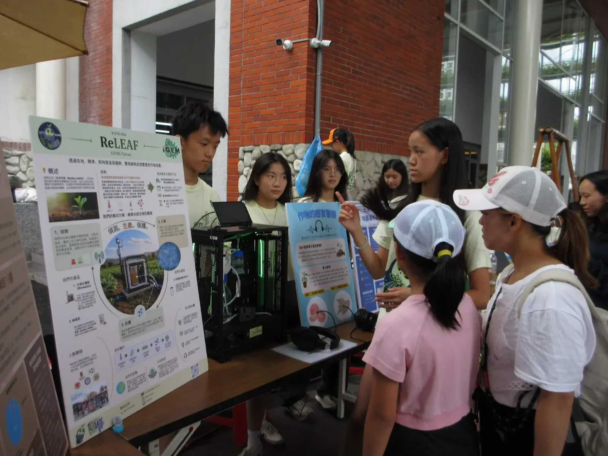
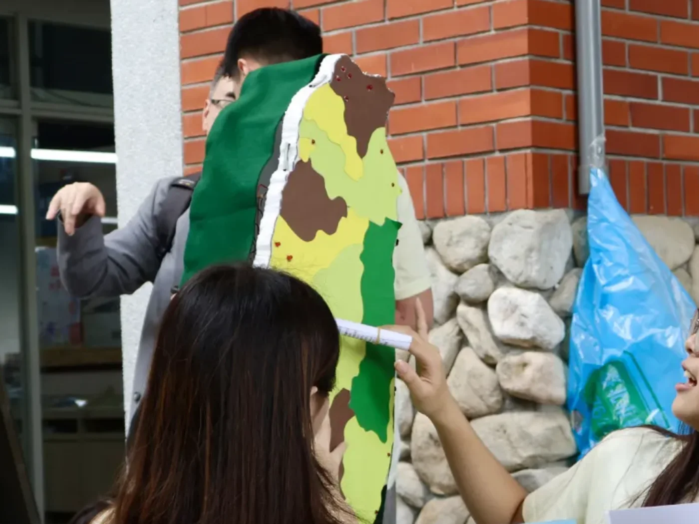
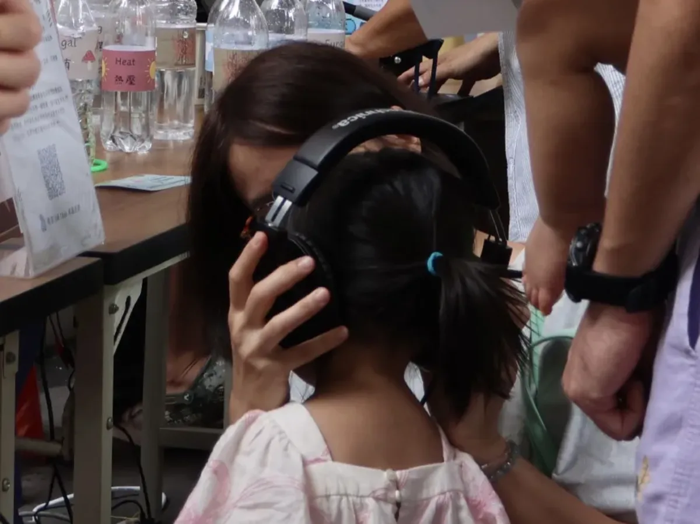
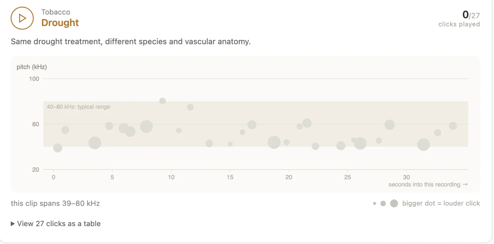
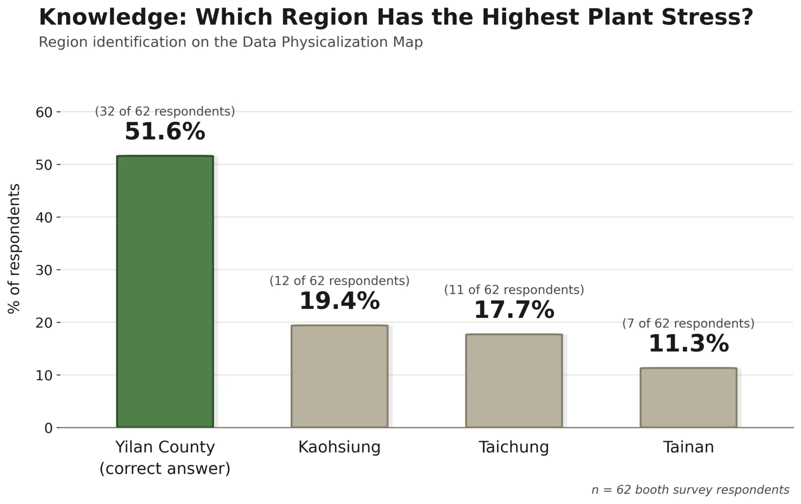
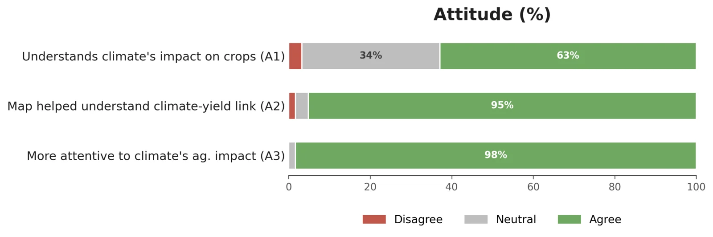
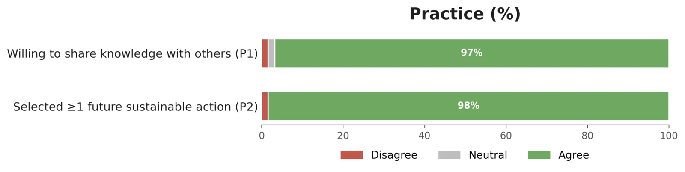

The booth
Climate stress is hard to care about because it is hard to perceive. A farmer reads it off a yield ledger months later, and everyone else reads it off a line going up. Our geospatial work had already produced the maps, and the maps were good, but a market crowd on a Saturday afternoon does not stand and study a choropleth. So we built the same two variables into things a person could hold, walk around, and hear.
Data physicalization is an established method with its own literature: it presents a dataset as a physical artefact whose geometry, material or behaviour carries the values, so that reading it becomes an act of looking and touching [1]. One of us came across a talk on it at the 2025 Grand Jamboree, and the idea sat unused until we had a dataset dense enough to be worth the trouble.
The exhibit ran on 5 September 2026 at the Taipei Water Garden Organic Farmers' Market, on the afternoon of our public forum 田間對話 (Dialogue in the Field). It was one of six ReLeaf booths there; the full day, the speakers and what we changed because of them are on the Integrated Human Practices page. Two things stood on our table:
- A stress map of Taiwan. Styrofoam, cut to the shape of the island, surfaced in coloured paper for crop yield, with LEDs set into it for plant stress.
- The sound of a plant under drought. Two pairs of headphones, wired to laptops hidden behind the poster, playing ultrasonic emissions recorded from drought-stressed tomato and tobacco and shifted down into human hearing.

116 people came through the booth. 62 of them filled in the survey afterwards, and the last section of this page is what they could and could not answer.
The data
We did not pick the two variables because they were the easiest to obtain. We picked them because they are the pair that makes the argument: heat stress is the thing ReLeaf responds to, and crop yield is the thing anyone in the crowd already cares about. Holding both on one surface lets a visitor see the relationship without being told it.
Both layers come from the county-level surfaces built for the geospatial analysis: station-derived heat stress, and agricultural yield by region. That page carries the sources, the interpolation and the gaps in them, including the counties where the temperature surface returns no value at all. The map on the table inherits every one of those limits, and it inherits them silently, which is the first honest thing to say about it.
The build order mattered. We took the pattern out of the data first, decided which physical property could carry that pattern, and only then cut anything. Every element on the finished board traces back to a number, so when a visitor asked why one region was flashing harder than another, there was an answer under it.
Stress map
The base is styrofoam cut to the outline of Taiwan. Coloured paper laid over it carries crop yield as a gradient, dark green for the most productive regions down through the yellow-greens to brown for the least. LEDs pushed through the board carry plant stress independently: the more severe the stress, the more frequently that region flashes. Yilan, the most stressed region in our data, flashes the hardest on the board.

| Variable | Physical element | Encoding |
|---|---|---|
| Crop yield by region | Coloured paper over the styrofoam base | Dark green is the highest yield, brown the lowest, with the intermediate greens and yellows between them |
| Plant stress severity | LEDs set into the board | Flash frequency rises with severity. Yilan, our highest-stress region, flashes fastest |
Splitting the two variables across two channels is the whole design. Colour is the outcome and light is the cause, so a visitor can see a brown region flashing and ask the question themselves before anybody standing at the table has said a word about it.
That question came up constantly, and usually as an objection. Visitors
expected Taipei to be the most stressed place on the board and were surprised
to find Yilan and Nantou carrying it instead. Several said so out loud when
they compared the board against the poster. It was the most useful thing that
happened at the booth: the map disagreed with what people walked in believing,
which is what made them stay and argue with it. One visitor wrote afterwards,
原來宜蘭縣對植物壓力最大
, that they had learned Yilan County carries the
highest plant stress.
Sound of plants
A plant running out of water is not silent. Under drought, the water columns inside its vascular tissue snap and cavitate, and each break emits an ultrasonic click. Khait, Hadany and colleagues at Tel Aviv University showed in 2023 that these clicks are airborne, that they carry information, and that they sit far above anything a person can hear [2]. That last part is why nobody notices. The signal is there in an ordinary greenhouse and the human ear is the wrong instrument for it.
The way they established it is worth stating, because it is the method that keeps the exhibit from being a novelty:
- Ultrasonic microphones. Recording across 20 to 250 kHz, about 10 cm from each plant, because the clicks sit above human hearing.
- A soundproofed chamber first. Tomato and tobacco recorded three ways: untouched, five days without water, and freshly cut.
- Then a working greenhouse. Repeated in ordinary background noise to show the result was not an artefact of the acoustic box.
- A trained classifier. Many acoustic features, not one threshold, separating stressed from healthy, drought from cutting, and tomato from tobacco.
We took the published recordings, which are deposited under CC0, and built a small web player around them. At the booth it ran on two laptops tucked behind the poster with only the headphones visible, so nothing about the technology was part of the experience. A visitor chose a plant, tomato or tobacco, put the headphones on, and listened to it dry out.

The player draws each click as it plays it, so the sound and the data are on screen together: pitch on the vertical axis, time into the recording on the horizontal, and dot size for loudness. It makes the point the headphones cannot make on their own, which is that this is a measurement and not a sound effect.

What visitors asked about was mechanism. Almost everyone wanted to know how a plant makes a noise at all, and the answer, that it is the sound of water columns breaking under tension, landed well because it sounds like something they already know: most people described what they heard as bubble wrap. The open question on the survey asked for the one thing each visitor found most memorable, and the clicks came back repeatedly in the free text.
| What visitors wrote | Translation |
|---|---|
| 植物缺水會發出咔咔聲 | Plants make a clicking sound when they lack water |
| 聽到作物的壓力聲音印象深刻 | Hearing the crop's stress sound was the most memorable part |
| 原來植物在遇到困難危險時會發出聲音 | I learned that plants actually make sounds when facing difficulty or danger |
| 知道植物缺少水分的時候居然會發出聲音 | I was surprised to learn plants make sounds when they lack water |
Those comments matter to the project and not only to the booth. ReLeaf is built on the premise that stress can be detected and answered before it becomes visible damage. The clicks are the plainest available demonstration that the signal exists early, and that the only thing missing is an instrument pointed at it.
Booth survey
The survey follows the Knowledge, Attitudes and Practices structure [3] used across our engagement work, so the booth results sit on the same scale as the forum and the school sessions. 62 of the 116 visitors completed it. All figures below are out of those 62.
Knowledge
The knowledge item is the one that tests the object instead of the explanation. We asked visitors to name the region shown as most stressed on the map, without prompting. 32 of 62, or 51.6%, said Yilan, which is the region the board marked. The rest split across Kaohsiung (12, 19.4%), Taichung (11, 17.7%) and Tainan (7, 11.3%).

Just over half, from one brief pass at a booth with no pre-briefing, is a reasonable result and a specific design instruction. The flash rate carries the entire stress variable and it is the part of the encoding a visitor has to be told about. The next version needs the mapping from flash rate to stress level legible on the board itself, so that the difference between regions does not depend on a team member standing beside it.
Attitude
Three attitude items asked what the visit changed. 62.9% rated their understanding of climate's effect on Taiwanese coffee and crop production as high afterwards, 33.9% as moderate, and 3.2% as low or none. On whether they would now pay more attention to climate impact on Taiwanese farming, 98% agreed.
The item that speaks directly to this page is the middle one: 59 of 62, or 95.2%, agreed that the map helped them understand the relationship between climate change and crop yield, and 36 of those, 58.1%, strongly agreed. Two were neutral and one disagreed.

The free text is where the sound exhibit shows up, not the map. Asked what was most memorable, several visitors named the clicking. Nothing they had looked at came up as often. For those visitors the headphones were the moment the abstraction turned into an event, which is an argument for building an auditory channel into engagement work generally and not only into this booth.
Practice
The practice items ask about intent, which is the weakest of the three measures and the one worth the most scrutiny. 60 of 62, or 96.8%, said they were willing or very willing to pass on what they had learned about crop protection and agriculture to friends or family. 98% selected at least one concrete future action from the list.

| Action selected | Respondents | Share |
|---|---|---|
| Prioritise locally produced or sustainably farmed produce and coffee | 49 | 79.0% |
| Follow and share climate and agriculture information | 37 | 59.7% |
| Join more science outreach or environmental activities | 18 | 29.0% |
Multiple selection, so the column does not sum to 62. The open responses ran in the same direction and were more specific than the checkboxes: supporting local farmers and coffee growers, cutting carbon footprints, conserving water and electricity, using less plastic, and telling other people what climate stress does to plants.
After the booth
Two things carried on from the day. The first is the design fix the knowledge item asked for: the flash-rate legend goes on the board, and the encoding gets tested on someone who has not been briefed before the board goes out again.
The second is that the exhibit does not scale and the idea behind it might. A physical map reaches the number of people who walk past a table, so we moved the same premise onto Instagram and asked people to photograph a stressed plant they pass in ordinary life and post it. The clicks and the board both work by making an invisible thing noticeable for a moment; a photograph of a wilting street tree does the same job for an audience we were never going to meet in Taipei.
What the booth fed back into the project itself, including the questions from the forum floor that we still owe answers to, is recorded on the Integrated Human Practices page.
References
- Jansen, Y., Dragicevic, P., Isenberg, P., Alexander, J., Karnik, A., Kildal, J., Subramanian, S. & Hornbæk, K. (2015). Opportunities and challenges for data physicalization. Proceedings of CHI 2015, 3227–3236.
- Khait, I., Lewin-Epstein, O., Sharon, R., et al. (2023). Sounds emitted by plants under stress are airborne and informative. Cell, 186(7), 1328–1336. doi:10.1016/j.cell.2023.03.009. Recordings obtained from the associated Dryad deposit (CC0).
- World Health Organization (2008). Advocacy, communication and social mobilization for TB control: a guide to developing knowledge, attitude and practice surveys. WHO/HTM/STB/2008.46.